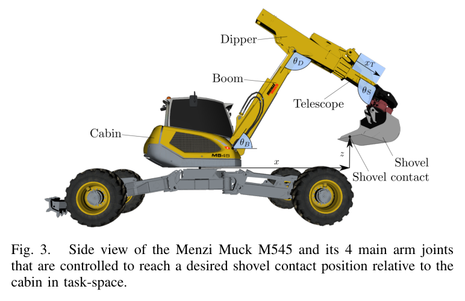
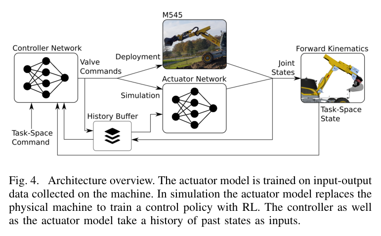
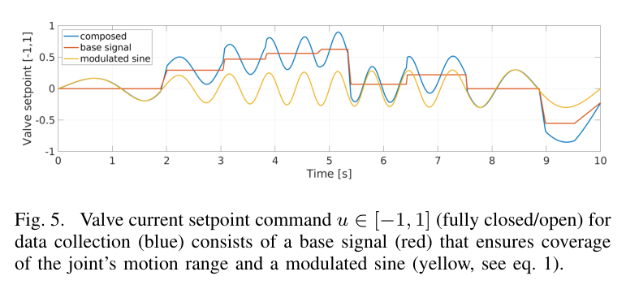
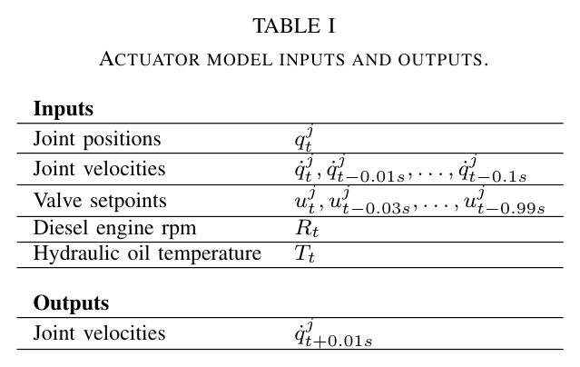
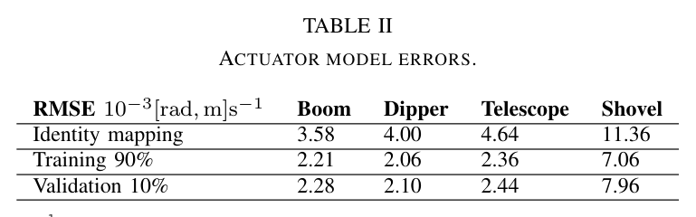
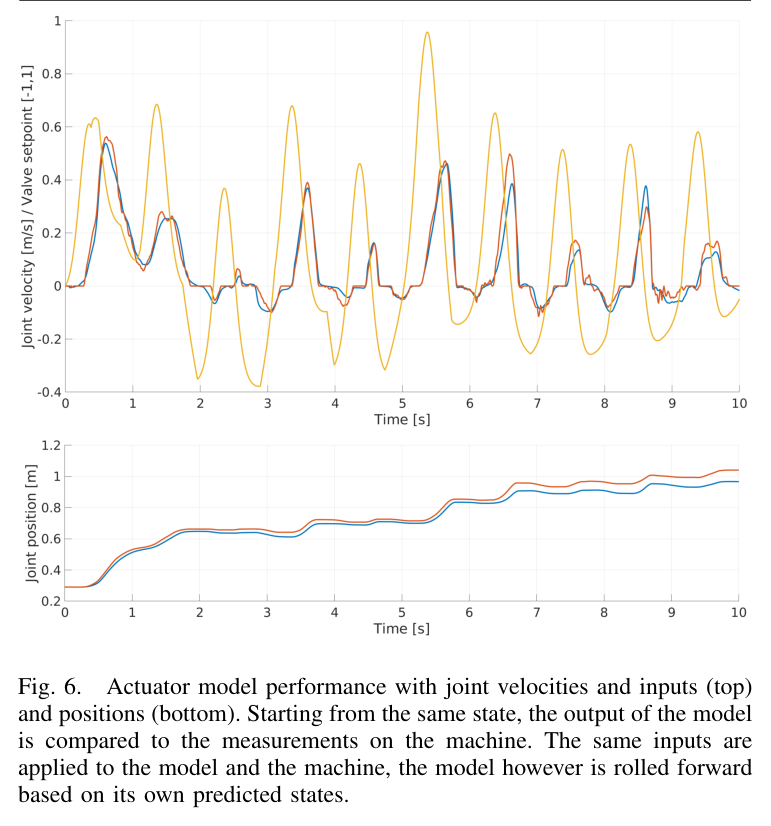
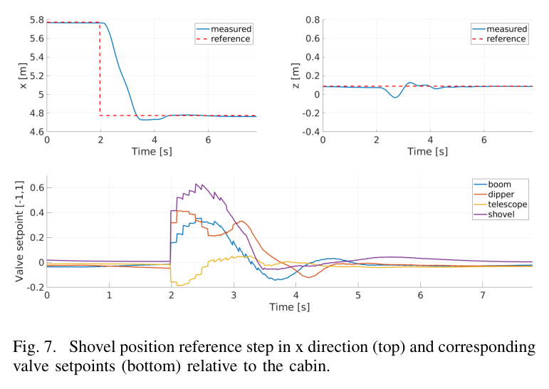
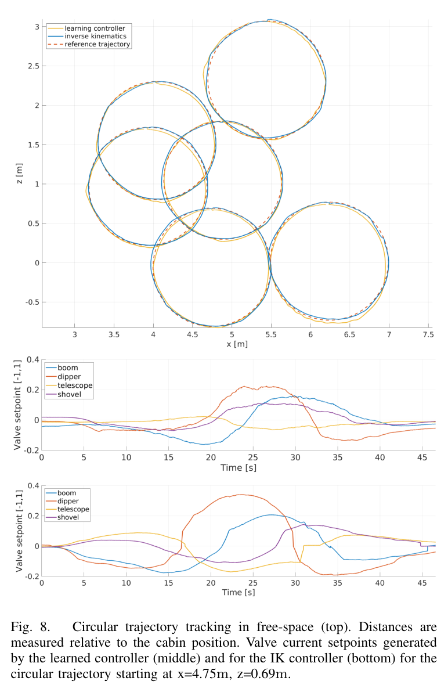
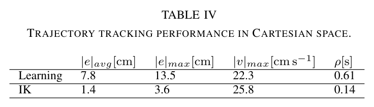

ABSTRACT / 초록
이 연구는 유압 굴착기의 액추에이터 동작을 실차 데이터로 학습하고, 그 모델을 이용해 강화학습 제어기를 만드는 방법을 제시한다. 100 Hz로 2시간 수집한 데이터에서 네 관절의 다음 속도를 예측하는 신경망을 학습한 뒤, 시뮬레이션에서 TRPO로 버킷 위치 제어 정책을 약 1시간 동안 학습했다. 정책은 실차 게인 튜닝 없이 배포됐다. 핵심 성과는 데이터 기반 모델을 통한 실차 제어의 가능성이다. 원 궤적의 평균 추종 오차는 7.8 cm로, 손으로 튜닝한 역기구학 제어기의 1.4 cm보다 컸다.
먼저 읽을 세 가지 발견
-
1
유압의 복잡성을 입출력 이력으로 모델링했다.
밸브·펌프의 상세 물리 파라미터를 구성하는 대신, 관절 상태와 약 1초의 밸브 명령 이력으로 다음 관절 속도를 예측했다. 엔진 회전수와 오일 온도도 입력에 포함했다.
-
2
학습된 모델이 실차 제어로 이어지는 다리가 됐다.
실차에서 직접 강화학습을 반복하지 않고, 학습한 액추에이터 모델을 포함한 시뮬레이션에서 정책을 훈련했다. 정책 가중치 수정이나 실차 게인 튜닝 없이 계단·원 궤적 추종을 검증했다.
-
3
튜닝 부담은 줄였지만 정밀도의 격차는 남았다.
원 궤적 평균 오차는 학습 제어기 7.8 cm, 역기구학 제어기 1.4 cm였다. 모델링과 배포의 성과를 정밀 제어의 우위로 해석해서는 안 된다.
기체마다 다시 맞추는 제어기에서 벗어나기
굴착기 제어의 어려움은 목표 위치를 계산하는 데서 끝나지 않는다. 밸브 명령이 실제 움직임으로 바뀌는 과정 자체가 복잡하다.
전통적인 접근은 역기구학으로 목표를 관절 명령으로 바꾸고, 실린더별 PID와 피드포워드 표로 동작을 보정한다. 이때 기체마다 실차에서 게인을 맞추는 작업이 필요하다. 유압의 지연과 데드존, 오일 온도 및 엔진 회전수에 따른 변화까지 설명하려면 모델과 튜닝의 부담이 커진다.
| 접근 | 남아 있던 문제 |
|---|---|
| 물리 기반 유압 모델 | 밸브·펌프 파라미터가 공개되지 않는 경우가 있고, 기체별 모델 구성이 필요하다. |
| 실차 직접 강화학습 | Dadhich 등의 접근처럼 실제 장비에서 학습하면 시간과 안전 관리 비용이 커진다. |
| 다리 로봇의 액추에이터 네트워크 | Hwangbo 등의 2019년 연구는 전기 액추에이터를 다뤘다. 유압 장비로의 확장이 과제였다. |
필요한 것은 상세 유압식보다 관측 가능한 상태
연구 플랫폼은 12 t 보행 굴착기 Menzi Muck M545다. 제어 대상은 붐·디퍼·텔레스코프·셔블의 네 관절이며, 목표는 캐빈 좌표계에서 버킷 접촉점의 위치를 맞추는 것이다.

| 구성 | 연구의 설정 |
|---|---|
| 상태 측정 | Sick 드로와이어 센서로 실린더 변위를 측정한다. 제시된 변위 측정 수치는 0.01 mm이며, 속도는 미분으로 얻는다. |
| 밸브 구동 | Hawe PMZ 비례 감압 밸브를 파일럿단에 후장착한다. |
| 기본 요구 사항 | 관절 상태 측정, 링크 길이, 전기 파일럿 밸브가 필요하다. 접근법상 상세 실린더–관절 기하 지식은 원칙적으로 요구하지 않는다. |
실차 데이터 → 모델 → 정책 → 실차
- 01 · COLLECT실차 데이터 수집상태와 밸브 명령
100 Hz · 2시간 - 02 · IDENTIFY액추에이터 학습입력 이력으로
다음 속도 예측 - 03 · TRAIN시뮬레이션 RLTRPO 위치 제어
학습 약 1시간 - 04 · DEPLOY실차 검증계단·원 궤적 추종
실차 게인 튜닝 없음

약 1초의 이력으로 유압의 응답을 배우다
좋은 예측 모델을 만들려면 다양한 상태와 응답을 관측해야 한다. 연구팀은 작동 범위를 넓게 훑는 기본 신호에 주파수·진폭 변조 사인파를 더해 데이터를 수집했다.
자극 신호: 넓게 움직이고, 빠른 변화도 관측한다
붐과 디퍼에는 게임패드 수동 명령을, 텔레스코프와 셔블에는 무작위 램프 명령을 기본 신호로 사용했다. 여기에 아래 변조 신호를 겹쳤다. 밸브 전류 명령 u의 범위는 −1에서 1이다.
× sin(2π[t + 0.99 sin(2π · 0.1t)] + φ2)

자극의 최대 주파수는 약 2 Hz로, M545의 속도 제어 대역인 0.5 Hz보다 높게 설정했다. 캐빈을 수평으로 유지하고 엔진 회전수 설정을 고정한 상태에서 100 Hz로 2시간 데이터를 모았다.
예측 대상: 0.01초 뒤의 네 관절 속도
액추에이터 모델은 은닉층 3개, 층당 128개 유닛과 ReLU를 사용하는 다층 퍼셉트론(MLP)이다. 네 관절을 하나의 네트워크로 예측한다. 입력에는 관절 위치, 0.1초의 속도 이력, 0.99초의 밸브 명령 이력, 엔진 rpm과 오일 온도가 들어간다.


기준선은 “다음 속도도 지금과 같다”
검증의 기준은 단순하지만 의미 있다. 현재 속도를 다음 시점에도 그대로 예측하는 항등 예측과 비교했을 때, 학습 모델의 검증 RMSE는 붐 36%, 디퍼 48%, 텔레스코프 47%, 셔블 30% 낮았다.
| 붐 | 디퍼 | 텔레스코프 | 셔블 |
|---|---|---|---|
| 36% | 48% | 47% | 30% |

명령 하나보다 명령의 이력이 중요하다.
유압의 지연을 모델의 입력 안으로 가져온 셈이다.
예측 모델 위에서 버킷의 움직임을 학습하다
액추에이터 모델이 “이 명령 뒤에 어떤 속도가 나오는가”를 예측한다면, 제어 정책은 “목표 위치에 가려면 어떤 명령을 내야 하는가”를 결정한다. 연구는 TRPO와 GAE를 사용하고, 정책·가치 네트워크에 각각 2 × 128 MLP를 적용했다.
- 정책의 관측 입력
- 상태·명령 이력 + 현재 버킷 위치·속도 + 목표 위치
- 정책의 출력
- 네 관절의 밸브 명령
- 학습 중 실행 주기
- 정책 10 Hz · 액추에이터 모델 100 Hz
- 에피소드와 학습 시간
- 에피소드 10초 · 학습 약 1시간
각 에피소드의 시작 자세, 목표, 오일 온도와 rpm을 무작위로 설정하고 관측·행동에 균등 잡음을 더했다. 관절 한계를 넘거나 자기 충돌·지면 충돌이 발생하면 −1의 보상을 주고 에피소드를 종료했다. 할인율은 γ = 0.99로, 정책 실행 주기 기준 보상의 반감기는 약 6.9초다.
가까이 가되, 명령을 과하게 흔들지 않는다
보상 함수는 목표 근접 보상, 명령 크기 벌점, 명령 변화 벌점의 합이다. 마지막 항은 연속된 밸브 명령의 차이를 줄여 매끄러운 출력을 유도한다.
χ와 χ*는 현재·목표 버킷 접촉점 위치, u는 네 개의 밸브 명령이다. 커리큘럼 계수 kc,1, kc,2는 각각 200·400 반복 동안 1에서 10으로 증가한다.
실차에서 작동했다. 정밀도는 아직 뒤처졌다.
학습한 정책은 실제 굴착기에서 목표를 따라갔다. 그러나 비교 제어기보다 낮은 위치 정확도는 이 방법의 현재 경계를 분명히 보여준다.
계단 명령: 1 m 이동에서 안정적인 응답

원 궤적: 튜닝된 역기구학 제어기와 비교

원 궤적 평균 추종 오차
낮을수록 좋음 · 두 막대는 동일한 선형 척도
튜닝 부담을 줄인 성과와 추종 정밀도는 별도로 평가해야 한다.
| 제어기 | 평균 오차 | 최대 오차 | 정규화 지표 ρ |
|---|---|---|---|
| 학습 제어기 | 7.8 cm | 13.5 cm | 0.61 s |
| 역기구학 · 손 튜닝 | 1.4 cm | 3.6 cm | 0.14 s |

속도 목표가 없으면 위치 오차가 움직임을 만든다
학습 제어기는 현재 버킷 속도를 관측하지만, 목표 속도를 명령받지는 않는다. 움직이는 목표를 따라가려면 목표와 현재 위치 사이에 오프셋이 생겨야 한다. 제공된 요약은 이를 큰 추종 오차의 원인으로 설명한다.
이 결과가 보여주는 범위
검증의 중심은 버킷의 위치 추종이다. 이를 경사지, 캐빈 선회, 속도·자세 명령까지 포함하는 굴착기 자동화 전체의 검증으로 확대해서 읽기는 어렵다.
운동 범위
캐빈 선회를 제외한 2차원 팔 운동을 다룬다. 선회 액추에이터는 모델에 포함되지 않았다.
운용 조건
캐빈 수평을 가정한다. 경사지에서는 중력 부하와 모델이 설명해야 할 상태 공간이 달라진다.
명령의 종류
목표 위치만 받는다. 목표 속도와 버킷 자세를 함께 지정하는 제어로는 확장되지 않았다.
후속 방향: 새 데이터로 모델과 정책을 함께 갱신하기
향후 방향은 실차에서 새 데이터를 얻어 액추에이터 모델을 갱신하고 정책 학습을 이어가는 Dyna 방식이다. 여기에 선회 액추에이터를 추가하고, 속도·자세 명령을 지원하도록 제어 범위를 넓힐 수 있다.
HR35에는 제어기보다 모델 대조군으로
이 논문에서 먼저 가져올 것은 최종 제어 정책보다, 물리 기반 트윈을 검증할 데이터 기반 기준 모델이다.
원 노트는 이 연구를 내부 연구 축 E·H의 대표 사례로 위치시킨다. 유압의 면적·체적탄성계수·마찰을 하나씩 구성하는 대신 “명령 → 속도” 관계를 통째로 학습하는 접근이다. HR35 트윈이 물리 모델을 유지하더라도, 이 모델은 예측 성능을 비교할 대조군으로 활용할 수 있다.
첫 번째 검사는 복잡한 모델보다 단순한 기준선
HR35에서도 “다음 속도 = 지금 속도”라는 항등 예측을 먼저 기준선으로 둘 수 있다. 동일한 검증 데이터에서 트윈이 이 기준선을 이기지 못한다면, 현재 평가 조건에서 모델이 추가 예측 가치를 제공하는지 점검해야 한다.
신호 설계는 옮기되, 샘플 수는 다시 정해야 한다
작동 범위를 훑는 기본 신호에 제어 대역보다 높은 변조 성분을 겹치는 수집 방식은 현장 시험 설계에 참고할 만하다. 다만 HR35는 조이스틱 CAN 명령을 사용하고, 원 노트에 따르면 경사계는 20 Hz다. 명령과 센서의 시간축을 맞추는 설계가 선행돼야 한다.
현장 시험에 가져갈 체크리스트
- 기준선 확보: 항등 예측, 데이터 기반 모델, 물리 트윈을 같은 검증 구간에서 비교한다.
- 조건 기록: 엔진 rpm과 오일 온도를 함께 저장해 회차 간 응답 차이를 분석한다.
- 시간축 설계: CAN 명령과 관측 센서의 타임스탬프·샘플링률·이력 창을 정리한다.
- 예측 검증: 한 스텝 오차와 자체 예측을 누적하는 롤아웃 성능을 함께 확인한다.
- 정밀도 판단: 수 cm 수준의 목표에 대해 위치 추종 오차를 별도로 검증한다.
2시간의 데이터 수집과 약 1시간의 정책 학습은 HR35에서도 검토할 만한 규모라는 것이 원 노트의 판단이다. 다만 이는 M545 연구에서 보고된 비용이며 HR35에서 같은 성능과 시간을 보장하지 않는다. 평균 7.8 cm라는 결과를 고려하면, 현 단계에서는 모델 확보와 트윈 검증을 위한 후보로 두는 편이 타당하다.
What to take forward
다음 실험은 더 좋은 비교에서 시작한다
이 연구는 상세 유압 물리식을 구성하지 않고도, 관측된 입출력으로 실차 제어에 사용할 모델을 만들 수 있음을 보여줬다. 동시에 튜닝된 제어기의 정밀도를 따라잡는 과제는 남겼다.
HR35의 다음 단계는 명확하다. 동일한 데이터에서 단순한 항등 예측, 물리 트윈, 학습 모델을 나란히 비교하자. 어떤 상태를 더 기록해야 하는지, 어떤 동작을 더 수집해야 하는지, 그리고 제어에 필요한 정확도에 얼마나 가까운지부터 확인할 수 있다.
출처와 읽기 안내
Pascal Egli and Marco Hutter.
Towards RL-Based Hydraulic Excavator Automation.
IEEE/RSJ International Conference on Intelligent Robots and Systems (IROS), 2020.
ETH Zürich, Robotic Systems Lab.
출판본 DOI · 10.1109/IROS45743.2020.9341598
ETH Research Collection · 10.3929/ethz-b-000431607
- 이 글은 제공된 한국어 논문 요약을 공개 기사 형식으로 재구성했다. 실험 수치와 설정은 해당 요약을 기준으로 정리했다.
- 그림과 원 표는 제공된 로컬 이미지이며 원 논문의 번호를 유지했다. 본문의 비교표와 막대그래프는 제공된 수치를 읽기 쉽게 재구성한 것이다.
- “2시간”은 실차 데이터 수집 시간, “약 1시간”은 제어 정책 학습 시간이다. 장비 준비·전처리·액추에이터 모델 학습을 모두 포함한 총 개발 시간으로 해석하지 않는다.
- 센서 변위 측정 수치 0.01 mm는 버킷 위치 정확도나 최종 제어 오차를 뜻하지 않는다. 성능표의 7.8 cm와 1.4 cm는 원 궤적 추종 실험의 평균 오차다.
- HR35 적용 의견과 강조 문구는 해석이다. 논문 저자의 직접 인용이나 HR35에서 검증된 결과가 아니다. 연구 축 E·H는 원 노트의 내부 분류다.